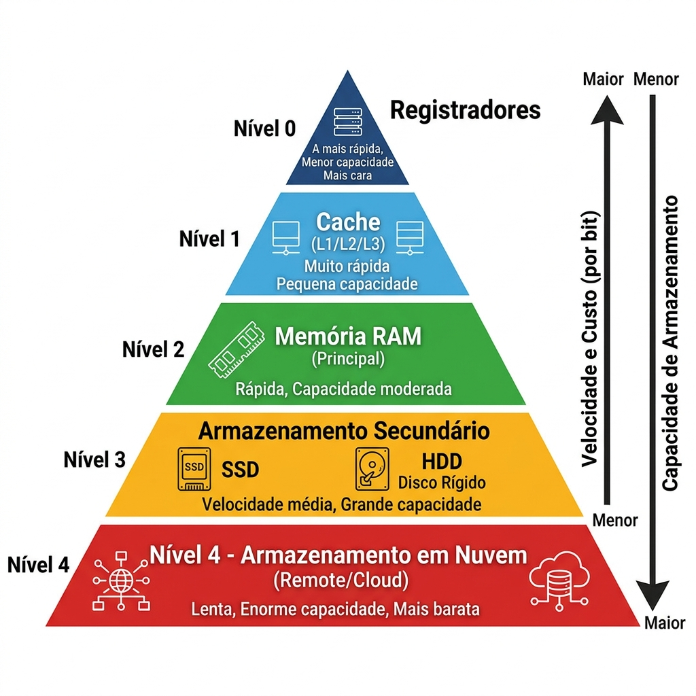

🟢 Aula 06 — Hierarquia de Memória e Memória Virtual
Disciplina: 90388 — Arquitetura e Organização de Computadores · Sistemas de Informação — Uniube
Professor: Romualdo Mathias Filho
Semana: 6 · [CONFIRMAR data] · sala [CONFIRMAR] · 📘 Teórica (75 min)
Tópicos: Revisão de MAR e MBR · Hierarquia de memória · Cache L1/L2/L3 · Memória virtual e paginação
Página de referência: Plano de Ensino e Contrato
Como os 75 minutos se dividem hoje
| Momento | Minutos |
|---|---|
| Entrada e caminho até aqui | 0–8 |
| Revisão: MAR e MBR, leitura e escrita | 8–21 |
| A pirâmide: registrador, cache, RAM, SSD | 21–29 |
| A cache e o custo de um miss | 29–40 |
| Memória virtual, paginação e thrashing | 40–53 |
| Slot: diagnóstico em duplas | 53–65 |
| Resumo, reflexão e próxima aula | 65–70 |
| Folga | 70–75 |
Responda antes de abrir. Se errar, você acabou de descobrir o que revisar hoje.
Na prática da Aula 05, depois do primeiro passo da execução de LOAD R1, 500, o que estava no MAR: 101, 500, ou o conteúdo da posição 500?
500. O MAR guarda sempre um endereço, nunca um dado. Na busca ele recebeu o endereço do PC (100); na execução recebeu o endereço que veio dentro da instrução (500). Se você hesitou aqui, o bloco 1 de hoje é para você.
No subciclo de busca, o endereço do PC vai para o MAR e a RAM devolve a instrução pelo MBR. Quem fica esperando enquanto a RAM responde?
A CPU inteira. Nada avança até o MBR receber a instrução. Quanto tempo dura essa espera é a pergunta de hoje.
Na Aula 04, quais dos 5 estágios do pipeline tocam a memória?
IF (busca da instrução) e MEM (leitura ou gravação de dados, só em LOAD/STORE). Toda instrução passa pelo IF, então toda instrução depende da memória pelo menos uma vez. Se a memória demora, o pipeline inteiro para. É o problema que a aula de hoje ataca.
🎯 O que você leva desta aula
- Dizer o que o MAR e o MBR guardam em cada momento, numa leitura e numa escrita, sem trocar os dois.
- Por que a memória é uma pirâmide de tecnologias, e o que muda em velocidade, capacidade e custo a cada degrau.
- O que a cache faz entre a CPU e a RAM, quanto custa um cache miss e por que existem três níveis em vez de um.
- Como a memória virtual e a paginação deixam um programa usar mais memória do que a RAM tem.
- Como reconhecer thrashing numa máquina lenta com CPU ociosa e disco em 100 %.
📂 Recursos
- Plano de Ensino e Contrato — calendário, notas, prazos e regras
- Gerenciador de Tarefas (Windows, aba Desempenho → Memória) ou
free -h(Linux) — para ver a RAM e o swap da sua própria máquina durante a aula
1. MAR guarda ONDE, MBR guarda O QUÊ, e na leitura um espera o outro [Revisão ⏳ 13 min]
Na Aula 05 os dois apareceram juntos, no meio do ciclo, e é fácil trocá-los. Hoje eles vêm primeiro e separados, porque a aula inteira de hoje é sobre quanto a CPU espera depois que o MAR faz um pedido.
Antes de abrir: a instrução STORE R1, 600 grava na posição 600 o valor que está em R1, que é 42. No instante da gravação, o que está no MAR e o que está no MBR?
MAR = 600 e MBR = 42. O MAR recebe o endereço (para onde o dado vai); o MBR recebe o dado (o que vai ser gravado), copiado de R1. Repare que o MBR não serve só para receber da memória: na escrita é ele que entrega o dado a ela.
| MAR · Memory Address Register | MBR · Memory Buffer Register | |
|---|---|---|
| Guarda | um endereço: onde na memória | um dado ou uma instrução: o quê |
| Por que esse nome | address = endereço | buffer = área de espera: é onde o dado fica parado entre a CPU e a memória |
| Fio que usa | barramento de endereço, só de ida (CPU → memória) | barramento de dados, nos dois sentidos |
| Na leitura | recebe o endereço a ler | recebe o conteúdo que a memória devolve |
| Na escrita | recebe o endereço a gravar | recebe o dado a gravar e o entrega à memória |
| Analogia | o endereço escrito no envelope | a carta dentro do envelope |
E como a memória sabe se é para ler ou para gravar? Pelo terceiro fio: a UC manda o sinal de leitura ou de escrita pelo barramento de controle.
Selecione LEITURA ou ESCRITA para isolar o caminho de cada uma. O MAR faz sempre o mesmo trabalho; quem muda de sentido é o MBR.
1.1 O que faltava era o QUANDO: na leitura, o MBR só muda depois que a memória responde
“Onde” e “o quê” são a regra. O que faz errar é o momento. A CPU faz o ciclo em passos, as micro-operações (t1, t2, t3): cada tN é um tique do clock, e em cada um só um ou dois registradores mudam. A seta ← lê-se “recebe”, e a contagem t1, t2, t3 recomeça em cada fase.
Antes de abrir: no passo t1 da execução de LOAD R1, 500, o MAR acaba de receber 500. O que está no MBR nesse instante?
Ainda LOAD R1, 500, a instrução que sobrou da busca. Em t1 o pedido acabou de sair pelo MAR. O conteúdo de [500] só chega ao MBR ao fim de t2. Se você respondeu “42”, juntou dois passos num só, e é exatamente esse atalho que embaralha MAR e MBR.
| Fase | Passo | Micro-operação | MAR | MBR | O que mudou |
|---|---|---|---|---|---|
| Busca (PC = 100) | t1 | MAR ← PC | 100 | (anterior) | o endereço sai do PC |
| t2 | MBR ← memória · PC ← PC + 1 | 100 | LOAD R1, 500 | a memória respondeu | |
| t3 | IR ← MBR | 100 | LOAD R1, 500 | a instrução vai para o IR | |
Execução do LOAD R1, 500 | t1 | MAR ← IR(endereço) | 500 | LOAD R1, 500 | o endereço sai de dentro da instrução |
| t2 | MBR ← memória | 500 | 42 | a memória respondeu | |
| t3 | R1 ← MBR | 500 | 42 | o dado vai para R1 | |
Execução do STORE R1, 600 | t1 | MAR ← IR(endereço) | 600 | STORE R1, 600 | o endereço sai de dentro da instrução |
| t2 | MBR ← R1 | 600 | 42 | o dado sai de R1 | |
| t3 | memória ← MBR | 600 | 42 | a memória grava 42 em [600] |
⚠️ Correção da Aula 05
Os valores do gabarito da prática da Aula 05 estavam certos; os rótulos das linhas, não. A linha “meio do fetch” juntou dois passos (t1 e t2 da busca). A linha “início da execução” mostrava o MBR já com o conteúdo de
[500], que é o estado do fim de t2, não do início. A tabela acima separa passo a passo, e é ela que vale. O PC também: aqui ele soma 1 já em t2, junto com a leitura, como no STALLINGS; na Aula 05 ele só somava no fim da busca. Nas duas ordens o PC aponta a próxima instrução antes de a execução começar.
Leia a coluna do MAR de cima para baixo: ele recebe do PC só na busca; na execução recebe do campo de endereço da instrução.
Agora leia a do MBR na leitura: ele só muda no passo seguinte ao do MAR, porque primeiro vai o pedido, depois vem a resposta. Na escrita, entre t1 e t2 não há resposta a esperar (o MBR ← R1 é interno), e os dois poderiam ser um passo só; a espera pela memória fica no t3.
Sua vez, no caderno: STORE R2, 700, com R2 = 9. Escreva t1, t2 e t3 da execução, com o valor do MAR e do MBR em cada passo.
t1: MAR ← IR(endereço) → MAR = 700, MBR = STORE R2, 700 (sobrou da busca). t2: MBR ← R2 → MAR = 700, MBR = 9. t3: memória ← MBR → a posição [700] passa a valer 9. O 9 nunca passa pelo MAR.
💬 Outros nomes para os mesmos dois
Em material em português o MAR também aparece como REM (Registrador de Endereço de Memória) e o MBR como RDM (Registrador de Dados da Memória); no PATTERSON e HENNESSY, o MBR aparece como MDR (Memory Data Register).
[CONFIRMAR: página de cada nomenclatura]Mudou o nome, não mudou o papel: um guarda onde, o outro guarda o quê.
A pergunta que fica para o resto da aula: o LOAD que você acabou de traçar em t1, t2 e t3 leva 3 ciclos?
2. A hierarquia de memória finge que existe uma memória rápida como o registrador e grande como o disco [Teoria ⏳ 8 min]
O processador da Aula 05 lê registrador a cada ciclo. Se toda leitura fosse na RAM, ele passaria a maior parte do tempo esperando.
Antes de abrir: trocaram o SSD SATA por um NVMe. O boot ficou bem mais rápido, mas a planilha gigante já aberta no Excel continua igual de lenta. Por quê?
Porque a planilha aberta não está no disco. O disco só participou na abertura; depois disso ela vive na RAM e na cache, e o disco não participa mais. Trocar o degrau errado da pirâmide não muda nada. É essa pirâmide que vem a seguir.
A hierarquia de memória resolve isso empilhando tecnologias diferentes: cada nível é menor, mais rápido e mais caro por byte que o de baixo. O objetivo é criar, para a CPU, a ilusão de uma memória com a velocidade dos registradores e a capacidade e o custo do armazenamento em massa.

💡 Dica de produção — a pirâmide é o seu escritório
Pense na hierarquia como a organização física de uma sala de engenharia:
- Registradores → o que você está lendo ou segurando nas mãos neste exato segundo.
- Cache L1/L2/L3 → os documentos abertos na sua mesa: acesso imediato, sem sair da cadeira.
- RAM → o armário no canto da sala: bastante espaço, mas exige levantar e caminhar.
- SSD/HD → o arquivo morto no porão do prédio: cabe tudo, e o acesso demora.
- Nuvem → o galpão terceirizado em outra cidade: capacidade quase infinita, mas exige transporte (latência de rede).
A RAM (Random Access Memory, memória de acesso aleatório) é feita de DRAM: mais lenta que a SRAM da cache, mas viável em gigabytes. É volátil: desligou, perdeu tudo.
Tudo que está “aberto e em execução” no seu computador vive na RAM: o navegador com 50 abas, o Spotify, o VS Code, o jogo, o Discord. Quando a RAM esgota, o sistema operacional precisa de um plano B, e ele é o tópico 4.
A memória secundária é não volátil: os dados sobrevivem ao desligamento. Os SSDs NVMe revolucionaram essa camada com latências em microssegundos, mas continuam estruturalmente 1000x mais lentos que a RAM no acesso aleatório.
3. A cache existe porque a CPU não pode esperar 100 ciclos a cada acesso à RAM [Teoria ⏳ 11 min]
Antes de abrir: o LOAD R1, 500 do bloco 1 executa em t1, t2 e t3, e cada tN é um tique do clock. Então a execução leva 3 ciclos?
Só se a memória responder num tique, e isso quase nunca acontece. Mas quase sempre são poucos ciclos, porque a L1 acerta a maioria dos acessos. Em t2 a UC pede MBR ← memória e fica parada, em estados de espera, até o dado chegar ao MBR. Quanto tempo depende de quem responde ao MAR:
Onde está [500] | Ciclos parados em t2 (ordem de grandeza) |
|---|---|
| L1 | ~4 |
| L3 | ~40 |
| só na RAM | ~100 |
A tabela de latências, logo depois da figura do chip, é a resposta inteira.
Quando o MAR pede um endereço, quem responde primeiro não é a RAM: é a cache. Ela é o segredo de desempenho dos processadores modernos. Fica entre a CPU ultrarrápida e a RAM relativamente lenta, guardando cópias dos dados que a CPU usa com mais frequência. É feita de SRAM, por isso é rápida; é pequena, por isso é viável.
| Nível | Tamanho típico | Latência | Quem compartilha |
|---|---|---|---|
| Registradores | Bytes (dezenas) | ~1 ciclo de clock | Apenas o núcleo em uso |
| Cache L1 | 32–64 KB | 1–4 ciclos | Privada por núcleo, separada em instruções (I-Cache) e dados (D-Cache), para o IF e o MEM do pipeline lerem no mesmo ciclo |
| Cache L2 | 256 KB – 1 MB | 10–20 ciclos | Privada por núcleo |
| Cache L3 | 8 – 64 MB | 30–50 ciclos | Compartilhada entre todos os núcleos |
| RAM (DRAM) | 8 – 128 GB | ~100 ciclos | Todos os processos do sistema |
| SSD NVMe | 500 GB – 4 TB | ~100.000 ciclos | Todos os usuários e o SO |
Antes de abrir: por que os processadores têm L1, L2 e L3 em vez de uma única cache L1 gigante de 32 MB?
Por limitação física. Cache maior exige circuitos de decodificação de endereço mais complexos e distâncias maiores dentro do chip, e isso aumenta a latência de acesso. A saída é ter níveis pequenos e muito rápidos junto de cada núcleo (L1/L2) e um nível maior compartilhado (L3). Assim a arquitetura ganha velocidade para o dado imediato e capacidade para a comunicação entre núcleos.
⚠️ Gotcha — a penalidade do cache miss
Cada nível que não tem o dado é um cache miss naquele nível. Quando falham os três (L1, L2 e L3), o processador suspende a execução (stall) e vai buscar o dado na RAM: ~100 ciclos gastos em espera, sem executar nada útil. Um hit na L1 responde em 1 a 4 ciclos; a RAM, em ~100: uma diferença de 25 a 100 vezes.
💡 Dica de produção — código que a cache gosta
Desenvolvedores experientes organizam os loops de dados para garantir localidade espacial e temporal: arrays contíguos na memória em vez de estruturas dispersas, como listas encadeadas. Ao buscar um dado na RAM, a CPU traz o bloco vizinho inteiro (a linha de cache); percorrer o array em sequência transforma um miss em vários hits (com linha de 64 bytes e inteiros de 4 bytes: 1 miss e 15 hits).
3.1 A busca desce nível a nível, e cada miss custa mais que o anterior
flowchart TD A[🖥️ CPU solicita dado] --> B{Dado está na cache L1?} B -- ✅ Cache HIT --> C[Retorna em 1 a 4 ciclos] B -- ❌ Cache MISS --> D{Dado está na cache L2?} D -- ✅ Cache HIT --> E[Retorna em 10 a 20 ciclos] D -- ❌ Cache MISS --> F{Dado está na cache L3?} F -- ✅ Cache HIT --> G[Retorna em 30 a 50 ciclos] F -- ❌ Cache MISS --> H[Busca na RAM principal] H --> I[Dado chega após ~100 ciclos] I --> J[Copia a linha, o dado e os vizinhos, para as caches] J --> K[Entrega à CPU: o PRÓXIMO acesso a ele vira hit] style A fill:#2778c4,stroke:#2778c4,color:#fff style H fill:#b1541b,stroke:#b1541b,color:#fff
A prioridade é sempre a memória mais rápida. Quando os misses se encadeiam, a CPU fica em stall, consumindo ciclos sem executar instruções úteis. E repare no último passo: o dado que veio da RAM é copiado para as caches, porque a aposta é que ele será usado de novo em breve (localidade temporal).
4. A memória virtual dá a cada processo a RAM inteira, e cobra em page faults [Teoria ⏳ 13 min]
Antes de abrir: você abre o Chrome com 50 abas, o Photoshop, o VS Code e um jogo, e a RAM de 8 GB esgota. O sistema trava, fecha um programa, ou continua?
Em geral, continua, mais lento. (No Linux, se nem o swap der conta, o kernel encerra um processo para liberar memória.) O sistema operacional tira da RAM as páginas que ninguém usou recentemente e as guarda no disco. Os programas não percebem: cada um continua enxergando a “sua” memória inteira. O que muda é o tempo de resposta quando uma dessas páginas é pedida de volta.
A memória virtual é uma técnica gerenciada em conjunto pela MMU do processador e pelo sistema operacional. Ela “engana” os aplicativos: cada processo acredita ter toda a memória do sistema para si, enquanto na prática os dados ficam distribuídos entre a RAM e o disco.
4.1 A MMU traduz sozinha; só o page fault chama o SO e espera o disco
sequenceDiagram participant Processo as 🧩 Processo (App) participant MMU as ⚙️ MMU (Hardware) participant SO as 🖥️ Sistema Operacional participant RAM as 🟦 RAM participant Disco as 💾 Disco (pagefile.sys) Processo->>MMU: Solicita acesso ao endereço lógico X alt Página está na RAM (page HIT) MMU->>MMU: Traduz sozinha, em hardware: TLB ou tabela de páginas MMU->>RAM: Lê o dado no endereço físico RAM-->>Processo: ✅ Dado entregue (rápido, o SO não participa) else Página não está na RAM (page FAULT) MMU->>SO: Interrupção de page fault SO->>RAM: Encontra frame livre ou elege uma vítima (a que está há mais tempo sem uso, aproximadamente) SO->>Disco: SWAP-OUT: grava a vítima no disco, só se ela foi modificada (página suja) SO->>Disco: SWAP-IN: carrega a página solicitada do disco para a RAM SO-->>MMU: Atualiza a tabela de páginas (e a TLB) com o novo frame MMU->>RAM: Lê o dado agora disponível RAM-->>Processo: ✅ Dado entregue (lento: houve E/S de disco) end
No acerto, o sistema operacional não entra: a MMU traduz o endereço em hardware. E ela não lê a tabela de páginas na RAM a cada acesso, porque isso ao menos dobraria o custo de toda leitura.
As traduções recentes ficam na TLB, a pequena cache dentro da própria MMU. A tabela só é consultada quando a TLB falha.
O page fault é uma exceção. Ela funciona como a interrupção da Aula 05: salva PC e PSW e desvia para uma rotina do SO. A diferença é que acontece no meio da instrução, que depois é refeita do começo.
É o evento mais caro da sequência, mas a CPU não fica parada esperando. O SO bloqueia o processo que causou o fault e escalona outro para rodar enquanto o disco responde.
O caro é para o processo bloqueado. Ele só volta quando a página chegar, cerca de 100.000 ciclos depois, contra ~100 de um acesso à RAM.
4.2 Thrashing é só swap: CPU ociosa, disco em 100 %
⚠️ Gotcha — degradação por thrashing
O thrashing ocorre quando a RAM física está tão escassa que o sistema operacional passa praticamente 100 % do tempo movendo páginas entre o disco e a RAM (swap-out e swap-in). O uso de CPU despenca não porque ela “para”, mas porque todos os processos estão bloqueados esperando E/S (entrada e saída) de disco ao mesmo tempo: o SO não tem ninguém pronto para escalonar, e o disco trava em 100 % de uso.
Em servidor de nuvem, o thrashing derruba o serviço inteiro antes de qualquer alarme de CPU disparar; a saída imediata é mais RAM ou um limite rígido de memória por processo.
| Situação | Causa | Solução |
|---|---|---|
| Máquina lenta, disco em 100 % | RAM esgotada → thrashing | Adicionar RAM ou fechar processos |
| ”Arquivo de paginação cheio” | pagefile.sys pequeno demais | Ampliar o arquivo de paginação |
| Processo com page fault constante | Conjunto de trabalho maior que a RAM disponível | Otimizar o uso de memória da aplicação |
💡 Dica de produção — veja o swap na sua máquina agora
No Windows, Gerenciador de Tarefas → Desempenho → Memória: a linha Comprometida
[CONFIRMAR: rótulo no Windows em português]mostra RAM física mais arquivo de paginação. Comprometida acima da RAM instalada é sinal de que o sistema pode estar paginando; a confirmação vem do uso de disco subindo junto, ou do Monitor de Recursos (aba Memória), que mostra as falhas de página por processo[CONFIRMAR: nome da coluna no Windows em português]. No Linux,free -hmostra a linhaSwap. Se o valor usado de swap cresce enquanto a máquina engasga, você está vendo o tópico 4 acontecer.
Para cada cenário: (1) em que nível da hierarquia está o gargalo? (2) qual conceito da aula explica? (3) o que você faria primeiro?
- Notebook com 8 GB de RAM, 40 abas do Chrome e o Photoshop aberto. A luz do SSD fica acesa direto e a CPU marca 10 % de uso.
- Num servidor de banco de dados, a mesma consulta leva 200 ms na primeira vez e 2 ms na segunda, sem nada ter mudado.
- Um jogo trava por um segundo quando muda de fase e depois flui sem engasgo.
- Um programa que percorre uma matriz por colunas leva 5 vezes mais tempo do que percorrendo por linhas, com a mesma quantidade de somas.
Discussão (abrir só depois de a dupla decidir)
- Nível 2 → 3, thrashing. RAM esgotada, o SO faz swap sem parar. A CPU marca 10 % porque todos os processos estão bloqueados esperando E/S (entrada e saída) de disco e não há ninguém pronto para rodar. Fechar processos ou adicionar RAM.
- Nível 3 → 2. Na primeira vez os dados vieram do disco; na segunda já estavam na RAM: o SO guarda ali cópias do que leu do disco (o page cache, que é RAM, não a cache SRAM do tópico 3). É a hierarquia funcionando a favor.
- Nível 3 → 2. A fase nova é carregada do disco para a RAM; depois disso, tudo vem da RAM e da cache.
- Nível 1, cache miss. Em C a matriz é guardada linha a linha; percorrer por colunas pula endereços e desperdiça a linha de cache (localidade espacial).
Critério de pronto: os quatro cenários com nível, conceito e ação, e a dupla sabe explicar por que a CPU marca 10 % no cenário 1.
Plano B: a atividade não depende de ferramenta nem de rede. Se o projetor cair, os quatro cenários vão no quadro e a discussão segue igual.
Oito coisas passaram na tela nesta aula. Tente responder o porquê antes de abrir. É o esforço de lembrar que fixa, não a releitura.
| O que você viu acontecer | |
|---|---|
No STORE R1, 600, o MAR ficou com 600 e o MBR com 42, e o dado saiu do MBR para a memória | por quê?O MAR guarda sempre o endereço (onde) e manda só de ida; o MBR guarda o dado (o quê) e anda nos dois sentidos: recebe na leitura, entrega na escrita. E o quando: na leitura, o MBR só muda no passo seguinte ao do MAR, depois que a memória responde. Na busca o MAR recebe do PC; na execução, do campo de endereço da instrução. |
| A pirâmide tinha o registrador no topo e a nuvem na base | por quê?Cada degrau para baixo é maior, mais barato por byte e mais lento. A hierarquia empilha tecnologias para a CPU enxergar uma memória rápida como o registrador e grande como o disco. |
| A tabela de latências pulou de 4 ciclos (L1) para 100 (RAM) e 100.000 (SSD) | por quê?Tecnologia e distância. SRAM junto do núcleo responde em poucos ciclos; DRAM fora do chip, em ~100; flash, por um barramento de E/S, em ~100.000. |
| A DRAM tem 1 transistor e 1 capacitor por bit, e a SRAM tem 6 transistores | por quê?É a troca entre densidade e velocidade. A célula pequena da DRAM cabe em gigabytes mas precisa de refresh; a célula grande da SRAM é rápida e estável, mas cara. Cada uma fica no degrau em que compensa. |
| No fluxograma, o dado que veio da RAM foi copiado para as caches | por quê?Localidade temporal: se o dado foi usado agora, a aposta é que será usado de novo em breve. O próximo acesso vira hit em vez de miss. |
| L1 e L2 eram privadas de cada núcleo, e a L3 era compartilhada | por quê?Cache maior é mais lenta. Níveis pequenos junto de cada núcleo dão velocidade; um nível grande compartilhado dá capacidade e serve à comunicação entre núcleos. |
| Na tabela de páginas, a página 2 tinha o bit presente em 0 e apontava para o disco | por quê?A RAM encheu e o SO fez swap-out dessa página. Se o processo tocar nela, ocorre page fault: o SO elege uma vítima, faz swap-in e só então o processo continua. |
| No cenário do notebook, a CPU marcava 10 % e o disco, 100 % | por quê?Thrashing. O SO passa o tempo inteiro trocando páginas entre RAM e disco; todos os processos ficam bloqueados esperando E/S, e a CPU não tem quem escalonar. Aumentar a RAM ou reduzir os processos resolve; um processador mais rápido, não. |
A cache e a memória virtual são duas mentiras contadas à CPU e aos programas: uma finge que a RAM é rápida, a outra finge que a RAM é infinita. As duas dependem de que o programa se comporte de um jeito previsível (localidade).
Que tipo de programa quebra as duas mentiras ao mesmo tempo? E o que sobra de desempenho quando isso acontece?
- STALLINGS, W. Arquitetura e Organização de Computadores: projetando com foco em desempenho. 11. ed. São Paulo: Pearson, 2024
[CONFIRMAR: edição e ano conforme o legado]. cap. 3 (função e interconexão: MAR e MBR), cap. [CONFIRMAR] (operação da unidade de controle: micro-operações t1, t2, t3), cap. 4 (cache), cap. 5 (memória interna) e cap. 8 (suporte ao SO), páginas [CONFIRMAR] — MAR e MBR na leitura e na escrita, e o traço de micro-operações, do tópico 1; a hierarquia, DRAM e SRAM do tópico 2; os níveis de cache do tópico 3; paginação e memória virtual do tópico 4. - TANENBAUM, A. S.; AUSTIN, T. Organização Estruturada de Computadores. 6. ed. São Paulo: Pearson
[CONFIRMAR: editora], 2013. cap. [CONFIRMAR] — memória principal e secundária, e a memória virtual vista do lado da máquina. - PATTERSON, D. A.; HENNESSY, J. L. Computer Organization and Design: The Hardware/Software Interface. 6. ed. Cambridge, MA: Morgan Kaufmann, 2020. cap. 5, páginas [CONFIRMAR] — localidade, linha de cache e a penalidade do miss.
Para ir além
- Nomenclatura no TANENBAUM (Organização Estruturada de Computadores): o par MAR/MBR aparece como MAR/MDR, e lá a sigla MBR nomeia outro registrador, o que recebe bytes de instrução.
[CONFIRMAR: página] - Leitura complementar (fora da bibliografia do plano): TANENBAUM, A. S.; BOS, H. Sistemas Operacionais Modernos. 4. ed. [CONFIRMAR: legado dizia LTC], 2015, cap. 3 (Gerenciamento de memória), p. 193–267 [CONFIRMAR]. É a visão do sistema operacional sobre page fault, algoritmos de substituição e thrashing.
- What is Virtual Memory? (Red Hat, em inglês) — artigo direto ao ponto sobre como o kernel Linux gerencia a abstração da memória virtual, garantindo isolamento entre processos e escalabilidade do sistema operacional.
- Na sua máquina: Gerenciador de Tarefas (Windows) ou
free -hevmstat 1(Linux) mostram RAM, swap e page faults em tempo real. Abra programas até a RAM encher e observe a coluna de swap subir.
Hoje a memória apareceu como o lugar de onde a instrução vem, e como ela pode demorar. Na próxima, a instrução em si entra em foco: o que ela diz, como é codificada e como o pipeline avança várias de uma vez. E você vai ver o que acontece com a linha de montagem quando um cache miss segura o primeiro estágio.